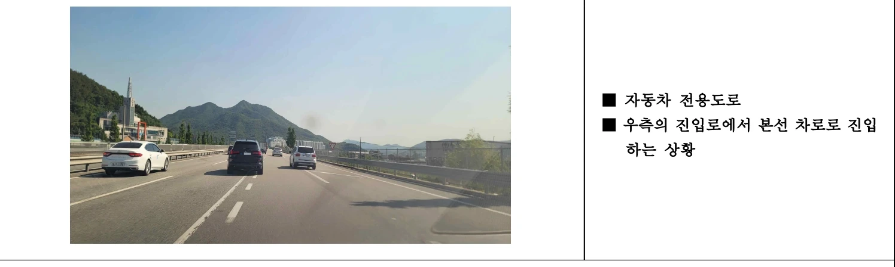

733. Дараах нөхцөлд хамгийн аюулгүй жолоодох арга 2-ыг сонгоно уу.

- ①Эгнээ солих боломжтой хэсэгт чиг заах дохио өгөхгүйгээр эгнээ сольж болно.
- ②1-р эгнээгээр явж буй суудлын автомашин 2-р эгнээ рүү эгнээ сольж болно.
- ③Нэгдэх эгнээнээс шууд 1-р эгнээ рүү эгнээ сольж болно.
- ④2-р эгнээгээр явж буй суудлын автомашин 1-р эгнээ рүү эгнээ сольж болно.
- ⑤2-р эгнээнээс нэгдэх эгнээ рүү эгнээ сольж болно.
Хариулт харах
Зөв хариулт
② 1-р эгнээгээр явж буй суудлын автомашин 2-р эгнээ рүү эгнээ сольж болно.
④ 2-р эгнээгээр явж буй суудлын автомашин 1-р эгнээ рүү эгнээ сольж болно.
Үндэслэл
Аюулгүй байдлын тэмдэг суурилуулсан, чиглэлийг өөрчлөхийг тусгайлан хориглосон газарт тээврийн хэрэгслийн чиглэлийг өөрчлөх ёсгүй. Та цагаан тасархай шугамын хэсэгт чиглэлийг өөрчилж болох боловч цагаан шугамын хэсэгт чиглэлийг өөрчлөх ёсгүй. Хатуу цагаан ба тасархай шугамтай давхар замтай хэсгүүдэд чиглэлийг зөвхөн тасархай шугамтай тал дээр өөрчлөх боломжтой. Чиглэлээ өөрчлөхдөө эргэх дохиог асаах ёстой бөгөөд аюулгүй байдлыг анхаарч нэг эгнээгээр явахад аюулгүй.
Үндэслэлийн текст нь машин орчуулга.